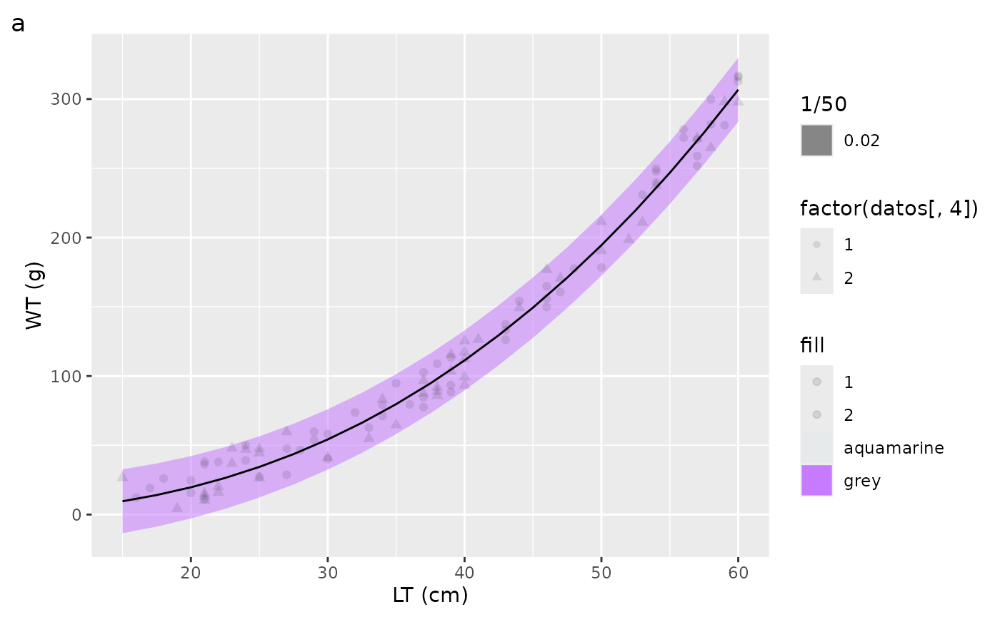

fn_figs {Morefi}
20 May 2024
fn_figs.RmdCustomize the appearance of the plot
Description
The function creates a customized scatter plot with the observed values (points), fitted regression (solid line) and its confidence interval (shaded area) using the package ggplot2.
The function use the theme_papers() to customize the
appearance of the plot.
The function returns a plot.
The function requires defining:
-
datos: A data frame containing the values of:
independent variable (x); dependent (y) and adjusted (yc) variable; and
Fleet (as factor)
- CIPI: A data frame containing the a seseqquence of the independent variable; the fitted independent variable and their confidence and predicted intervals (lowest and highest value).
- i: An integer value indicating the regression analyzed
-
modelos: A list of variables (integer values) that
are used for the regression model.
- etiquetas: A list indicating the labels of the axes (the name of the variable and its unit of measurement).
See also: ggplot2 (version 3.4.4) See also: theme_papers(): customized for the present work
fn_figs
The function is included in the Morefi package
Morphological Relationships Fitted by Robust
Regression.
The function is detailed below.
fn_figs <- function(datos, CIPI, i, etiquetas, modelos){
Fig <- ggplot(CIPI,aes(x = CIPI[,1])) +
geom_ribbon(aes(x = CIPI[,1], ymin = CIPI[,3], ymax = CIPI[,4],
fill = "aquamarine"), alpha = 1/50) +
geom_ribbon(aes(x = CIPI[,1], ymin = CIPI[,5], ymax = CIPI[,6],
fill = "grey", alpha = 1/50)) +
geom_line(aes(x= CIPI[,1], y = CIPI[,2])) +
geom_point(datos, mapping=aes(x= datos[,1], y = datos[,2],
shape = factor(datos[,4]), stroke = 1,
fill = datos[,4]), alpha = 1/10)+
labs(tag = letters[i],x= etiquetas[modelos[[i]][1]],
y = etiquetas[modelos[[i]][2]])
print(Fig)
} # End fn_figsExamples
A total of 100 simulated data of total length cm (LT) and total
weight (g) data for a hypothetical fish species. The x
values range from 15 to 60 cm. The parameters of the potential model
are: ordinate = 0.011 and slope = 2.5. The values of observed
y were calculated using the parameters of the potential
equation plus a random number between -20 and 20. The lower
CIl and upperCIu confidence interval values
were calculated using the Standard Error of the Estimate
SE.
set.seed(123)
rvar <- sample(-20:20, 100, replace=TRUE)
x <- sample(15:60,100,replace=T)
y <- (0.011*x^2.5)+rvar
n <- length(x)
Fleet <- as.factor(sample(1:2,100,replace = TRUE))
yc <- 0.011*x^2.5
datos <- data.frame(x1=x,y1=y,yc=yc,Fleet=Fleet)
# CI & PI
#SE <- sqrt(sum((y-yc)^2)/(100-2))
MSE <- sum((y-yc)^2)/(100-2)
xseq <- seq(15,60, by=2.5)
yseq <- 0.011*xseq^2.5
CP <- (1/n)+(((xseq-mean(xseq))^2)/sum((xseq-mean(xseq))^2))
ICl <- yseq -(1.96*(sqrt(MSE*CP)))
ICu <- yseq +(1.96*(sqrt(MSE*CP)))
IPl <- yseq -(1.96*(sqrt(MSE*(1+CP))))
IPu <- yseq +(1.96*(sqrt(MSE*(1+CP))))
df <- as.data.frame(cbind(xseq, yseq, ICl,ICu, IPl, IPu))
colnames(df) <- c("x1", "fit","IC_L","IC_U", "IP_L","IP_U")
df
#> x1 fit IC_L IC_U IP_L IP_U
#> 1 15.0 9.585634 1.197678 17.97359 -13.499379 32.67065
#> 2 17.5 14.092492 6.571710 21.61327 -8.691760 36.87674
#> 3 20.0 19.677398 13.014851 26.33994 -2.838142 42.19294
#> 4 22.5 26.414901 20.597692 32.23211 4.134867 48.69493
#> 5 25.0 34.375000 29.383676 39.36632 12.296202 56.45380
#> 6 27.5 43.623893 39.427497 47.82029 21.711117 65.53667
#> 7 30.0 54.224533 50.770669 57.67840 32.441761 76.00731
#> 8 32.5 66.237066 63.431423 69.04271 44.547630 87.92650
#> 9 35.0 79.719175 77.387414 82.05094 58.085934 101.35242
#> 10 37.5 94.726361 92.575640 96.87708 73.111885 116.34084
#> 11 40.0 111.312174 108.980413 113.64393 89.678933 132.94541
#> 12 42.5 129.528403 126.722759 132.33405 107.838967 151.21784
#> 13 45.0 149.425243 145.971378 152.87911 127.642470 171.20802
#> 14 47.5 171.051430 166.855034 175.24783 149.138654 192.96421
#> 15 50.0 194.454365 189.463040 199.44569 172.375567 216.53316
#> 16 52.5 219.680214 213.863006 225.49742 197.400180 241.96025
#> 17 55.0 246.774005 240.111458 253.43655 224.258465 269.28954
#> 18 57.5 275.779701 268.258919 283.30048 252.995449 298.56395
#> 19 60.0 306.740281 298.352325 315.12824 283.655268 329.82529
CIPI <- df
i <- 1
# To create the List etiquetas
lLT <- "LT (cm)"
lWT <- "WT (g)"
etiquetas <- list(lLT,lWT)
#To carry out each of the regressions, a list `modelos` is created to indicate
#the variables that will be taken into account.
modelos <- list (LTvs.WT = c(1,2))
library(ggplot2)
#theme_papers <- readRDS("theme_papers.rds")
FY <- fn_figs(datos, CIPI, i, etiquetas, modelos)